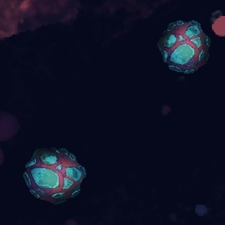
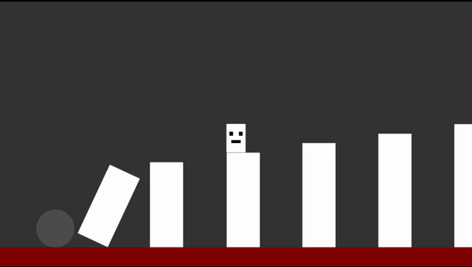

Who Opened The Hatch
Play Who Opened The Hatch
Introduction
It had been over a year since I worked on a game project. A 20 Second Game Jam prompt was a good opportunity for me to refresh my memory of the process of game development. The focus of the jam was on the honing of skills necessary to polish the core elements of a game in order to grab the players' interest in a short time and have them wanting more. For this project, I've teamed up with an artist and a music composer, April and Claire, from the jam's discord server.
Theme
The jam offered a range of themes to choose from and they were all optional. I have leaned towards the theme "rocket" since, at the time, I was interested in the physics mechanics, inertia and gravity assist.

Title
This game was initially going to be the third game in the Zodiac Ranger series, but I have chosen to keep this game as a stand-alone project for a few reasons including the following: all the games in the Zodiac series so far are set in an environment where the player's ship rotates around an object as a result of gravity, and gravitational slingshot is the essence of those games which is missing here. I have chosen the name "Who opened the hatch" since it felt like a question that could pique curiosity and it also sounded funny to me.
Gameplay and Level Design
I wanted to make use of inertia as one of the core mechanics since I find a mix of control and randomness to be quite enjoyable at this time. I have decided that a fixed screen would be efficient since it would cost considerable amount of time to move around an object like in Zodiac series. Once I've established that I wanted a fixed-screen game, I had to choose a role for gravity. To do this, I needed to see what the level looked like and I had to playtest it a few times with different parameters.

Reference not to scale.
Early Prototype.
I've set up a 2x4 grid where each "cell" contains a tile spawner. Each spawner consists of nine slots
in a 3x3 grid layout. A specific number of these slots would be chosen randomly at the start of the
level and tiles would be spawned in these slots. Some of the ideas that I have considered and prototyped
are:
1. Get to the destination without touching any tiles.
2. Pick up the astronauts that are spawned at semi-random positions in each cell and get to the
destination.
3. Play as an astronaut who needs to pick up minerals in space and return to ship.
(same concept, different visuals)
4. Various grid layouts, spacings, tile counts.
5. Gravity being enabled and disabled.
Though I have started with the idea of gravity being enabled, I have decided to disable the gravity after a few playtests since it felt better to keep the ship moving without resistance. If gravity were enabled, the gameplay would have been much more similar to Lunar Lander. It is not an implication that one is better than the other- they are different mechanics and it is more of a personal preference.
Spawning the Level
I have made a list of slots from which one slot is randomly chosen by the spawner at the start of the level to spawn a rock in. From the remaining slots, 2 slots will be randomly chosen to spawn NPCs in. I have decided to reduce the number of rocks since it would allow more space for players to move around in and enjoy the smooth flow of the ship while also keeping an eye out for the rocks. Now it feels way more relaxing since the focus is shifted towards embracing flight as opposed to focussing on constantly avoiding rocks.
Art
I was focussing on refreshing my memory more than I was trying to make a polished game at the beginning of the project. Some of the earlier assets used involved Kenney's sprites as well as my own.


I've made a few prototypes for the timer UI. An oxygen tank seemed to be a decent idea that fit well
with the premise of the game. Once I had a stable foundation for the game and realised that I would be
able to complete the project, I have teamed up with an artist, April from jam's discord server. Though they
were relatively new to producing game art at the time, they were able to adapt quickly and deliver
quality content.
As I have tried pixel art a few times in the past, I wanted to experiment with a different art style.
Inspired by games like Hollow Knight and Cuphead where the visuals feel like traditional visual art, I
wanted to try an art style that would resemble a painting.

Collider on the ship.
The artist made a few rough sketches of the assets and a variety of options to choose from. I have
chosen this model of the ship since I felt that its silhouette was visually way more attractive and
seemed suitable for a ship that would be used for rescuing astronauts in the game.
In terms of
functionality, a ship with length and width close to 1:1 ratio is likely to do better in terms of
collision with environment since spinning on its own axis is a significant mechanic in this game.
Spinning with an elongated collider is likely to cause inconveniences in the level such as hitting a
rock which the ship would have not hit were it facing a different direction. This decision was made to
make the gameplay convenient for the players.
Perhaps I could have added an elongated collider and
designed the level in such a way that players could choose between an easy route and a high-risk,
high-reward play style. This would require a good amount playtesting, of course.
The colour of the ship was chosen to contrast the background. The astronauts were also chosen to be of
similar colour since it conveys better that the astronauts and the player ship are associated while also
standing out from the background.


The colours of the rocks make them fit in with the environment but also stand out just enough for the
players to easily spot them. There are two different rock sprites and the script randomly chooses one of
them at the start of the level. Initially, I have allowed both the sprites to be used in each game, but
I have noticed that it feels relatively refreshing to have them show up separately.
For my earlier projects, I have often used royalty free assets that were made by experienced and
dedicated game artists. This meant that I had little to worry about how well they fit in the scene. Now
that I was having assets created, I had to make sure that the resolution at which they were being
imported into the engine fit well with the size of the scene, the target screen resolution, and that the
renderer parameters in Unity were set appropriately to have the images appear in the best way possible
without having pixels glitching.
Music
I have teamed up with a music composer from the jam's discord server. They were able to understand the
needs and produce quality audio for the game.
The music was designed specifically to highlight the randomness that comes with inertia while also
focussing on the control that the player has on the ship. All this was done while preserving a pace that
keeps the players' energy up.
To build hype and reduce monotony, I have chosen the audio feedback for the NPCs to be escalating each
time the player rescued an NPC.
While I already knew how to have one music track looping in the background across multiple scenes, I
learned and implemented two music tracks that would span across multiple scenes depending on whether the
player is in the menus or restarting the level.
I have also learned to use One Shot in Unity which I used for NPC feedback and explosion sound effects.
One shot is basically "start and forget" since it cannot be stopped; the benefit is that one audio
source component can be used multiple times and for multiple audio clips. An example I found while learning about
this is of a cube that is being thrown around in a room and the thuds being played repeatedly while also
overlapping.

I've written a script that changes the pitch of the engine sound within a
fixed range depending on the ship's speed in order to reduce monotony and to make it feel like the
engine is behaving as expected.
The pitch value changes between 0.5 and 3. The maximum magnitude of
ship's velocity is set to be 4. The magnitude is divided by 4 in order to bring it under 1, and then it is
multiplied by 3 since the top limit of the pitch I have assigned is the value 3. The bottom clamp, 0.5
ensures that the engine sound does not completely stop even if the ship is stationary or moving at a
very low speed.
Juice
To make the game feel alive, I've added visual juice and subtle details. There would be shooting stars in the background that fly across the screen every few seconds.
Instead of spawning new shooting stars
each time, I had only three game objects which return to the starting position on the x axis. After
travelling a certain distance within a fixed range, the script chooses a random position on the y axis,
a random speed, a random length for the body- all within fixed ranges.
These controlled changes allow
the shooting stars to appear as different objects. This is perhaps not the best way to achieve this
effect but this was added towards the end of the project - I chose to quickly put something together
that got the job done instead of worrying too much about efficiency considering the scope and size of
the game.
I have initially tried to make the stars in the background twinkle as well, but it was taking
more effort than what I was willing to put in at the time to make it look and feel as desired.
The rocks and the astronauts carry scripts that make them spin clockwise or counter clockwise. I have also added two different speeds for each direction in order to add variety and make them feel less monotonous. The speed and direction are chosen randomly at the start of the level for each rock and astronaut. The script on the rocks also makes the rock sprite stretch by a random value within a fixed range at the start of the level.

In order to improve the visual attractiveness, I have added trails behind player's ship. Realistically, it is not possible that such trails would exist in space where there is no atmosphere. However, the need for player's enjoyment outweighs the need for realism.

Asset reuse is crucial to save time and energy. This above asset was used as the filler for the oxygen tank, background for the buttons in menu screens, and a few other places in order to make them fit better with the chosen art style.
I've written a script that chooses a random colour for the heart each time an NPC was rescued. While this felt quite refreshing and exciting, it also strayed from the rest of the art style. For the sake of the greater good, I have decided to leave the heart in its original colour.
The circular masking helps in making the scene transition look less boring while also serving the function of getting the players' attention towards the ship at the start of the level.
The camera shake is an obvious element at this point in my game dev journey. The shake upon explosion increases the intensity of the collision and also the players' immersion in the game.
Bugs
The first bug I had come across was a music track playing in only one ear. However, the other sound
effects were playing in both the ears. I fixed this by resetting the parameters of the audio source
component in Unity when I found that some of the values were not in their default state.
The game would stop responding upon starting the level but not when I start from the settings menu. I
narrowed down the possibilities to audio script which remains across scenes. I've tried changing the
code for how background music gets called upon scene transition, but it did not fix the problem. I then
found that I was setting the volume of level's background music after loading the level by taking the
value of the volume slider instead of the slider's value which is saved in a variable. I fixed this by
removing the reference to the slider which does not exist anywhere outside settings menu and replacing
it with a reference to the variable that keeps a copy of the value set by the volume slider.
Playtest and Feedback
Information is key to the player and when the player fails at something in the game, it should not be due to the reason that the game did not give them adequate information.

I was originally going to set the screen
boundaries to be lethal but chose to leave a few pixels of safe space beyond the edges so that if
players accidentally got too close, they would still have a little breathing room to turn around and get
back to safety. However, this has caused confusion to some playtesters since it was not indicated
clearly where the boundaries exactly were. To deal with this, I have added a red glow at the boundaries
that light up on that respective side of the screen to indicate danger if the player touches the
screen's boundary.
Lesson: Always provide clear information in visuals, and preferably audio too, if something has a
significant effect on the players or the gameplay.
Though I have added the ability to navigate the menus with both mouse and keyboard, the initial control
scheme for the player's ship had only WAD keys. Upon playtesters' feedback, I have added arrow keys to
the ship's control scheme.
Lesson: Give multiple options for inputs to allow flexibility and provide better experience
throughout
the game for players with various needs. It is also worth noting that allowing players to remap the
keys
is a good idea as well since it gives them more control over how they interact with the game.
If you are a developer and your game's difficulty level seems reasonable to you, it is likely extremely
challenging to the players. Some playtesters have said that it was difficult to maneuver the ship. I
tweaked the ship's maximum velocity, acceleration, and turn speed a few times to make the game playable
to a wider range of players.
Lesson: Keep the game playable for casual players and add extra challenges and rewards to motivate
hardcore players.
"This is extremely good!"
"Good job. Fun game!!"
"Cool visuals and music!"
"I really liked it."
"this ones a ton of fun"
"nicely done. good play and polish!"
Lesson: Use the praise as additional motivation to make more games. Reciprocate the positive
attitude to
create a healthy community and environment to grow in.
Accessibility
Royalty free font "OpenDyslexic" was used in order to facilitate better experience to players with dyslexia.
Temposition
Introduction
The participants of Secret Santa Jam 2020 write to each other anonymously and each member receives a letter containing information regarding the interests of the writer. We had to develop a game that includes something relevant to the interests of the writer. The person who wrote to me offered a choice between a rhythm based game and a visually appealing platformer.
Inspiration
While researching platformers and rhythm games, I found a game called "140" where the level and the platforms are in sync with the background music. I wanted to try and make something similar. This would include both the choices I was offered- rhythm based and visually appealing platformer.
Partner
I teamed up with a music composer from the jam's discord server. They communicated efficiently, produced quality music and delivered in a timely manner.
Level Design
I chose to make a platformer rather than something like Rhythm Heaven Fever since I wanted to improve my skill in designing platformer levels. Though this game does not have a spectacular level design, I did learn a few new things and set a direction for the improvement of my skills.
Templates
I created a behaviour script that I used as a template for most of the platforms. The values for movement speed, start position and end position were manually entered for each platform after attaching the script.
Effects & Details
A subtle detail that I added to the audio visualiser is that each bar has a different set of values: the sensitivity and maximum height of the bars in the higher difficulty areas are higher than that of the bars in the lower difficulty areas of the level.
The Catch
The audio visualiser flashes random colours in sync with the beats. This may be a potential trigger for those who suffer from epilepsy or have health conditions that are triggered by bright flashing lights. I added a clear warning of the flashing lights in both the download page as well as in the main menu of the game. In retrospect, I realise that I should have added an option to disable the flashing of the visualiser, and display the warning in the loading screen as well.
Accessibility
Royalty free font "OpenDyslexic" was used in order to facilitate better experience to players with dyslexia.
Hyper

Play Hyper
Introduction
It was the first time that I completed a project. By the time this project began, I was already familiar with some of the basics of game design and development. So, I decided to make something similar to an existing game and tweak the design a little bit to allow me to improve my game designing skills while also learning to develop a game. I chose Space Invaders as it seemed relatively easier for me to execute and complete the project at the time.
Shortcuts & Efficiency
On one hand, not all the scripts are as good as they could have been in maintaining a lighter CPU workload. On the other hand, I took a few shortcuts with some parts of the development, without affecting the gameplay, to save time, and reduce the work load on the computer and on myself. For instance, the NPC ships circling the player character are attached to one empty parent object in the center which is scripted to rotate on its own axis. This helps in avoiding having multiple movement scripts in the scene while still achieving the same gameplay experience.
Dynamic Difficulty
The NPC fire rate varies between a fixed range based on the Player's Health State: higher the player health, higher the fire rate. The NPC rotation speed increases whenever the player hits an NPC rather than increasing over time. These mechanics synchronise the game's difficulty level with the player's skill level to some extent.
Accessibility
Royalty free font "OpenDyslexic" was used in order to facilitate better experience to players with dyslexia.
Trend Surfer

Introduction
This game was made for Weekly Game Jam. The theme was "chain reaction." This was the first time that I took part in a game jam, and it was also the first time that I worked with a deadline as short as one week. I teamed up with JDR, a developer that I met in the Jam's Discord server. We helped each other work on our own individual games rather than collaborate on a single game due to the significant differences in our schedules. We shared and bounced ideas off of each other, exchanged feedback, play-tested and helped polish each other's games.
Time management
As it was the first time that I attempted to make a game under a week, I had no idea on how to manage my time effectively. JDR introduced me to Trello, which I used to prioritise the game mechanics and plan out the development of the game. Most of the week was spent on polishing the level and fixing bugs. I implemented the core gameplay, pause menu, main menu, and uploaded a playable version before the deadline.
Level Design
Designing a level was a rudimantary skill at the time. I looked up key-terms
relevant to the theme and found a few interesting results of random objects set in a
dominoes-like-effect. I thought that it would be cool to have a level in which all the platforms
are
set in a chain reaction.
Though I used physics simulation for only some parts of the level, I managed
to maintain the appearance of a chain reaction throughout the level. As I was not yet
experienced
enough with level designing, I could not build a bigger level or multiple levels. Using
platforms
with diverse mechanics, I built one level which can be completed in approximately one minute.
Bug Fixing
A large ball in the level was supposed to hit a pillar that would knock pillars over. However, when the ball touched the first pillar, it did not tip over in some playtest sessions. To fix this, I decreased the mass of the pillars, increased the mass and the force of the ball, increased the torque on the pillars by a reasonable amount to make sure that they would completely tip over but not spin like a top. The pillars now tip over as expected.
Accessibility
Royalty free font "OpenDyslexic" was used in order to facilitate better experience to players with dyslexia.
Ten Jumps

Introduction
This game was made for The Fresh Game Jam 2021. I chose to make a platformer as I was looking to improve my skill in designing levels for platformers. I was inspired by a fancy little indie platformer called Un-Evergreen by Motor in which you have a limited number of jumps. I applied the concept of limited jumps to fit the theme "management" (you have to manage your jumps) and worked on improving my level designing skill.
Level Design
Designing the level for this game was tricky since the player has a limited number of jumps to use. Among other things, this restriction forced me to come up with the pink platforms that gave a free instant jump for the player character, adding variety to the gameplay as well as the level. I created multiple scripts, each with a specific mechanic or behaviour, allowing me to quickly apply any script to any platform that I thought needed that mechanic or combination of mechanics.
Hints
The banners on the wall are hints that convey to the player where they needed to use a jump. I set the hints to be invisible by default and added the ability to make them visible on a key press so that the players can choose whether they want the hints, adding a bit of control over the difficulty of the game.
Art
In order to improve my skill in creating sprites, I made my own art for most parts of the game using LibreSprite. The brick sprite is reused for the platforms as well as the background, with slight change to the colour to differentiate one from the other.
Accessibility
Royalty free font "OpenDyslexic" was used in order to facilitate better experience to players with dyslexia.
Rainy Rhythm
Introduction
This game was made for Weekly Game Jam. Since the theme "Siesta" refers to relaxation, I wanted to make a game that offers a relaxing experience for the players. This was the first time that I worked on a rhythm based game.
Rhythm Centered Development
The scripts and the development process are significantly different in a rhythm based game.
In most games, you write the script in such a way as to synchronise the game objects and other
elements with the frame rate in order to maintain consistency in gameplay experience. In a rhythm
game, however, syncing the game elements with the frame rate causes the gameplay to lose
synchronisation with the music.
Instead of connecting with delta time, some of the game elements were coupled with real time clock
to maintain consistency, especially in the scrolling speed of the arrows.
Keeping the Flow
The arrows carry trigger boxes to check for the overlapping of the appropriate arrows. The box sizes are relatively large in size so that the players may not feel pressured to achieve pixel perfect accuracy in a game about relaxation.
Music
Royalty free music was used for Ode to Joy and the sound of rain. If the player misses too many beats, the rain slowly fades and the sky becomes bright and clear. Owlbert the workaholic owl wakes up from his nap and flies off to work. In order to keep the game less punishing, I kept the music playing and the arrows scrolling so that the players may still continue playing and enjoy the music.
Art
Krita was used to draw the owl and the background. The owl in the rainy scene is a different game object from the owl that flies off if the rain stops. I used two different objects in order to make it convenient to script its behaviour.
Accessibility
Royalty free font "OpenDyslexic" was used in order to facilitate better experience to players with dyslexia.